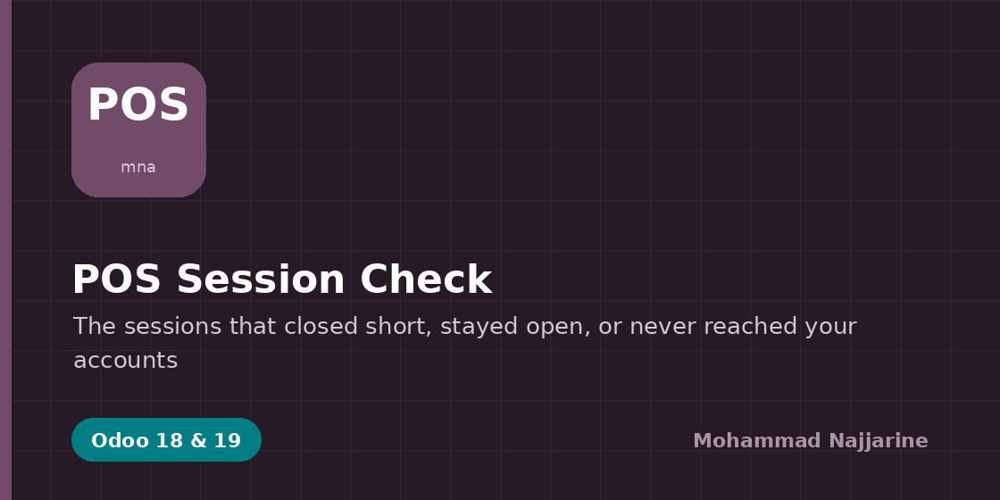
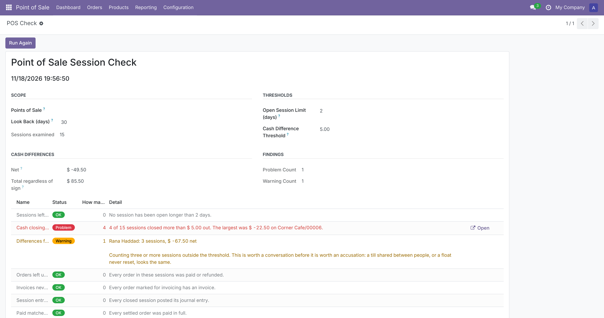

A Point of Sale closes dozens of sessions a month and Odoo tells you about none of them. This adds one screen that answers the questions a shop owner actually asks at the end of the month, and links every answer to the records behind it.
Free and open source under LGPL-3.
With how long. An open session holds its takings out of the ledger.
Above a threshold you set, with the worst one named.
Counted across sessions, because one bad night is an accident.
Draft or cancelled orders sitting in a closed session.
Orders marked to invoice where the customer is still waiting.
Closed sessions whose journal entry never posted.
Orders where the two do not agree by more than rounding.
Negative lines not linked to the order they refund.
Green where there is nothing to do, so the two lines that need you stand out. Each finding opens the records it counted.

A shop trading past midnight has an open session every morning. A report that calls that a problem is a report nobody reads twice, so the limits are settings rather than assumptions.
It needs three sessions before it says anything, and it says plainly that a till shared between people, or a float never reset, looks exactly the same as a dishonest cashier. It is a prompt for a conversation, not an accusation.
It reports. It never corrects anything, so running it can never make things worse.
| Odoo | 18.0 and 19.0, Community or Enterprise |
| Depends on | Point of Sale only |
| Licence | LGPL-3, free |
| Tested | 13 automated tests, each check tested clean as well as dirty |
Written and maintained by Mohammad Najjarine, Odoo consultant. Questions and bug reports are answered.